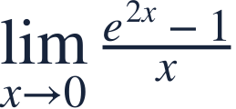
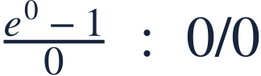
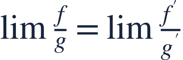
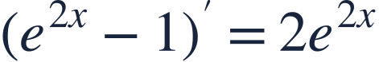
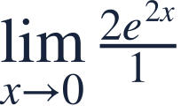
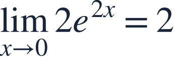
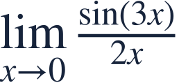

L Hospital rule
로피탈의 정리

An indeterminate form can permit a derivative comparison under L’Hospital’s hypotheses.
로피탈 정리의 조건이 맞으면 부정형을 도함수의 비로 바꾸어 비교할 수 있습니다.

An indeterminate form can permit a derivative comparison under L’Hospital’s hypotheses.
로피탈 정리의 조건이 맞으면 부정형을 도함수의 비로 바꾸어 비교할 수 있습니다.

Check 0/0 or ∞/∞ first. Assume differentiability nearby and a nonzero denominator derivative there.
먼저 0/0 또는 ∞/∞인지 확인합니다. 근방에서 미분가능하고 분모 도함수가 0이 아니어야 합니다.

Here the derivative ratio has a finite limit, so L’Hospital’s rule applies.
여기서는 도함수 비의 극한이 유한하게 존재하므로 로피탈 정리를 적용할 수 있습니다.

Differentiate numerator and denominator separately.
분자와 분모를 각각 미분합니다.

This comparison uses derivatives, not the quotient rule.
여기서는 도함수의 비를 쓰며 몫의 미분법을 쓰는 것이 아닙니다.

The transformed expression is continuous at zero.
바꾼 식은 0에서 연속이므로 대입합니다.
A nonzero number divided by zero is not a 0/0 indeterminate form.
0이 아닌 수를 0으로 나눈 형태는 0/0 부정형이 아닙니다.

Verify the form, then use the derivative ratio.
형태를 확인한 뒤 도함수의 비를 쓰세요.